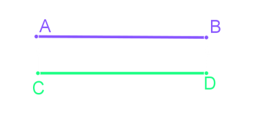
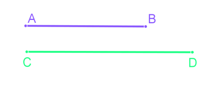
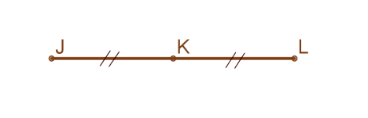
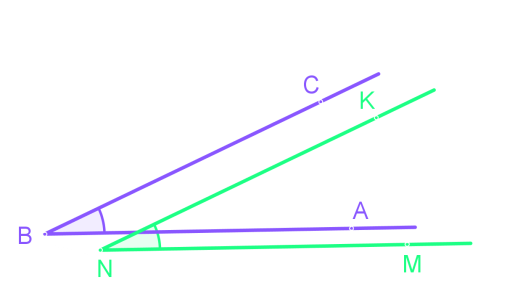
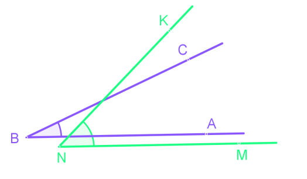
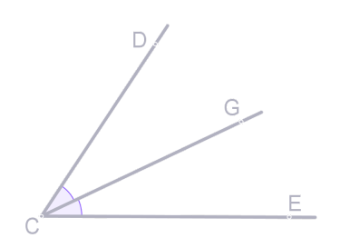

Сравнение углов, отрезков и геометрических фигур
Сравнение геометрических фигур
В геометрии две фигуры, имеющие одинаковую форму и одинаковые размеры, называют равными.
Сравнение позволяет судить о равности фигур, и один из способов сравнить фигуры - накладывание.
Если две геометрические фигуры удаётся совместить наложением, они равные
Сравнение отрезков и углов
Как происходит совмещение отрезков AB и CD?
Конец A одного отрезка совмещают с концом C другого отрезка. Если совпадают и другие концы B и
D, тогда AB = CD.

Если нет, тогда отрезок, который является частью другого, счиатеся меньше, этот факт записывают
также, как при сравнении чисел: AB < CD.

На отрезке точку, которуя отрезок делит на две равные части, называют серединной
точкой.
Если точка K серединная точка отрезка JL, то JK = KL.

Как происходит совмещение углов ∠ABC и ∠MNK?
Вершину B одного угла совмещает с вершиной N другого угла и сторону BA одного угла
накладывает на сторону NM другого угла так, чтобы другие стороны BC и NK были по одну
сторону от совместившихся сторон. Если BA и NM совпадут, и BC и NK сопадут, то ∠ABC = ∠MNK.

Если нет, то угол меньшим считается тот угол, который является чатью другого.
∠ABC < ∠MNK.

Луч, исходящий из вершины угла и делящий угол пополам, называется биссектрисой угла.
